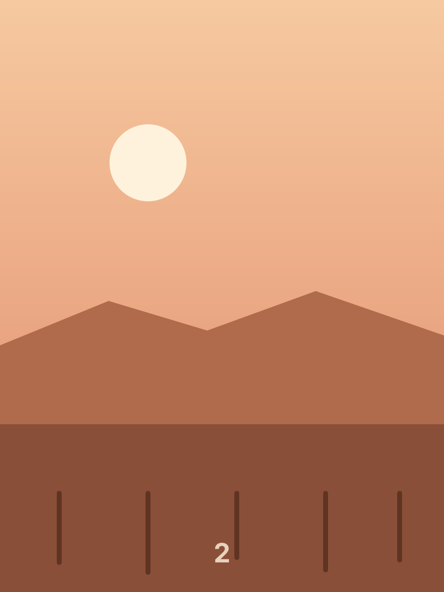
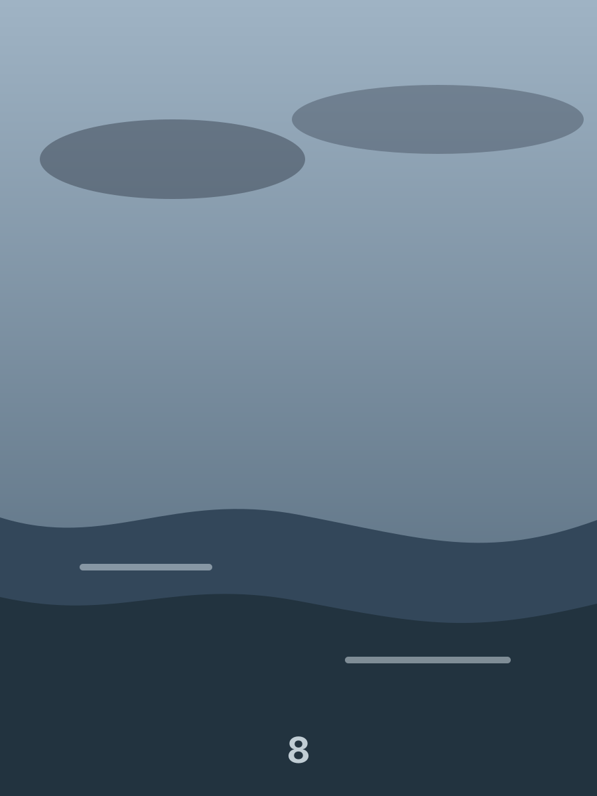
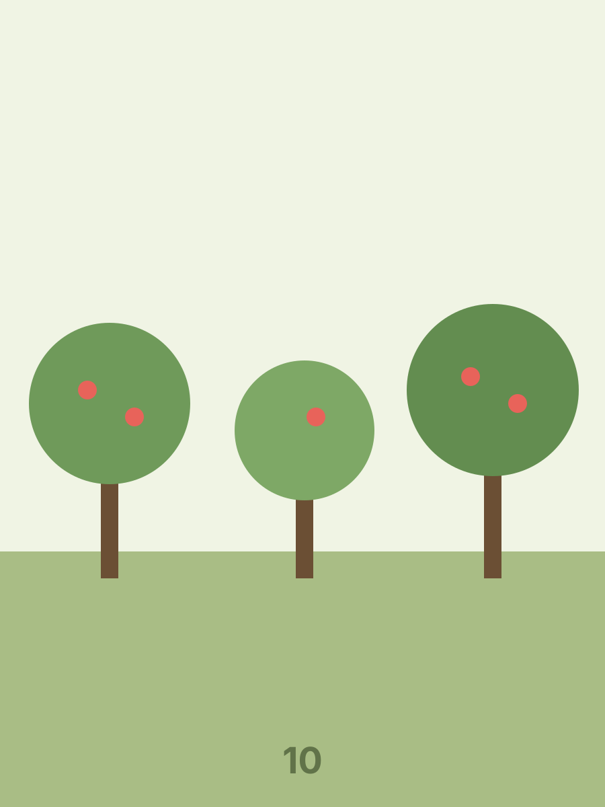
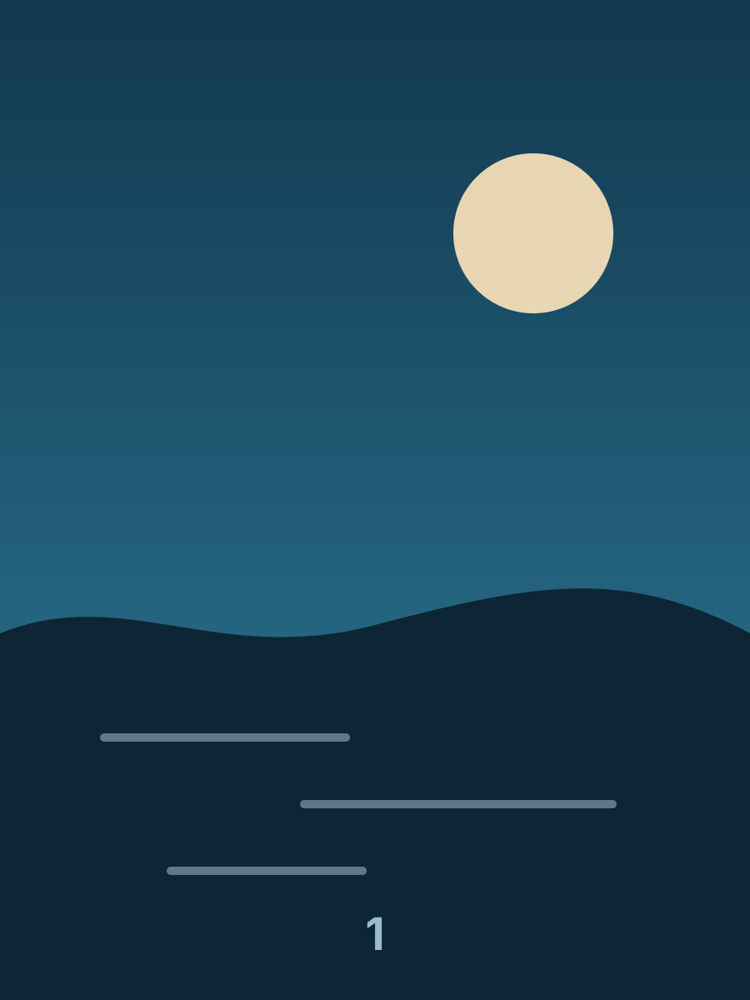
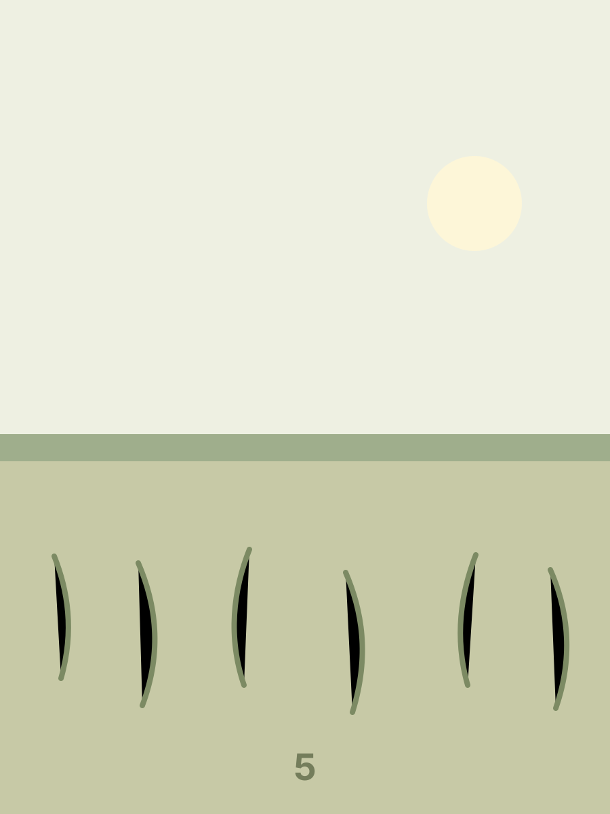

One page
One page is one leaf with a blank back, and there is nothing to turn to. Both arrows say so by being disabled rather than sitting there doing nothing when pressed — an end of the book is a real end.
Two pages, one leaf
The shortest book that can be turned. Turning its only leaf moves the whole stack from one side of the spine to the other, and the forward arrow then reaches its end.


A page that never arrived
The third page here points at a file that is not there. The leaf keeps its place and its turn: a book that dropped a page would renumber every page after it for a reason the reader cannot see.


Reduced motion
Under prefers-reduced-motion a turn arrives without travelling: the
page changes, nothing swings. Dragging still works, because that is a movement the
reader is making rather than one happening at them — it simply lands the moment it
is let go.

